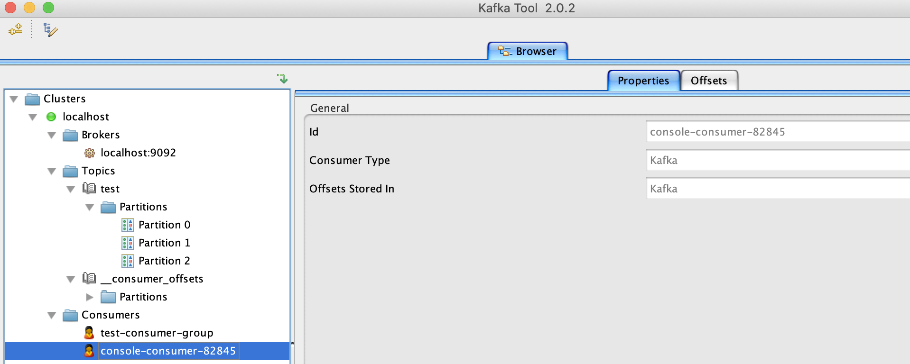
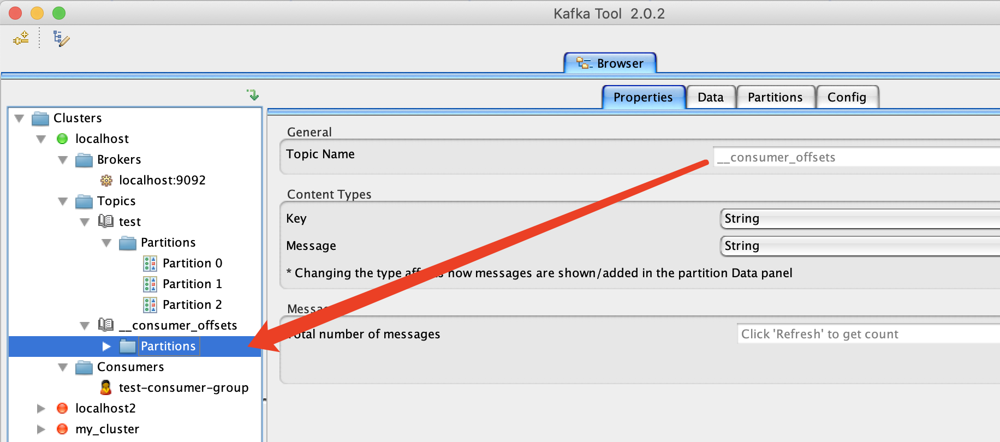
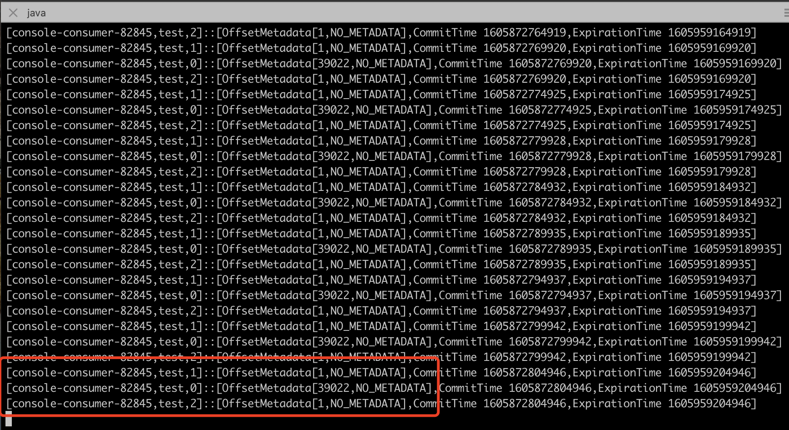
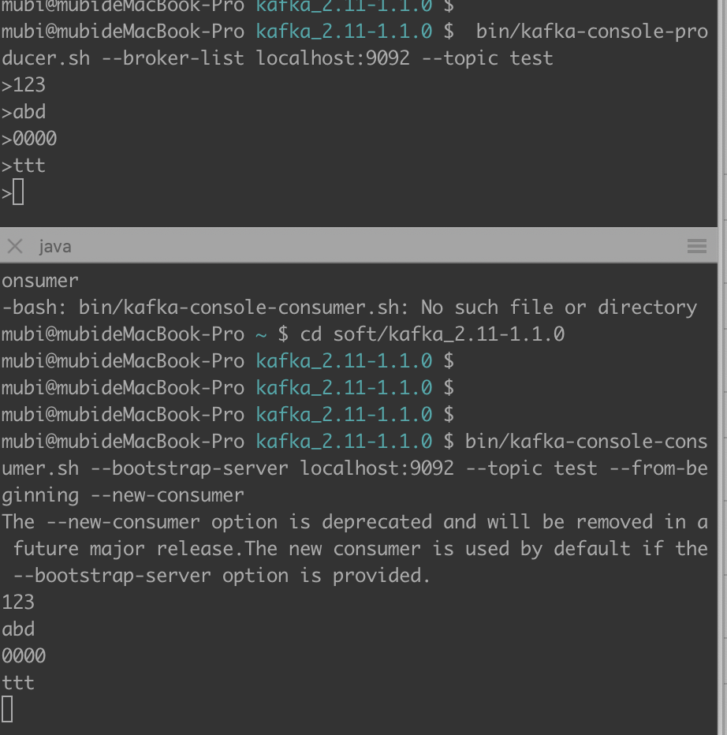
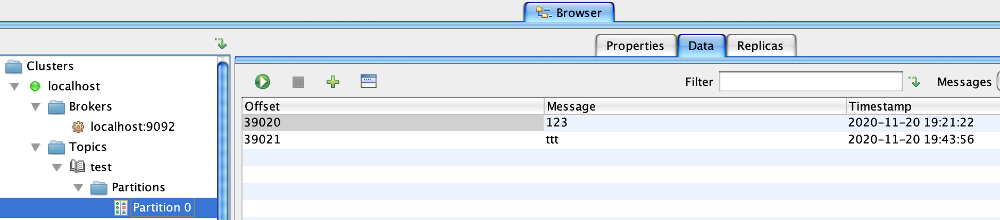
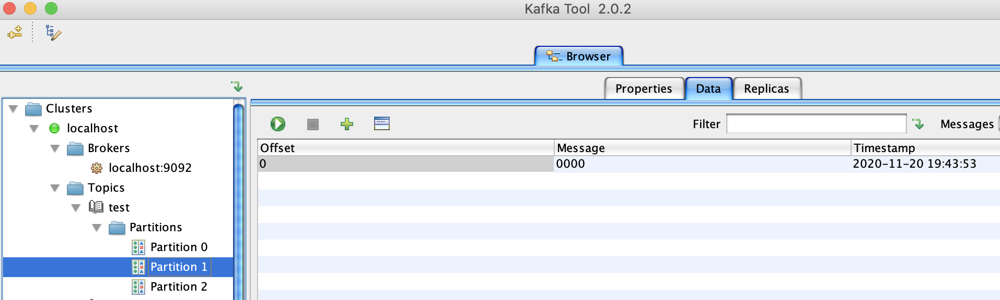
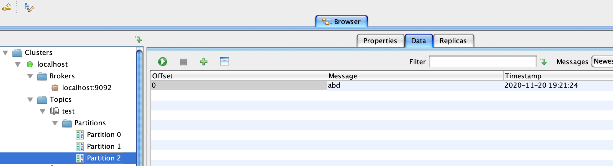

__consumer_offsets
查看__consumer_offsetstopic内容
启动kafka，并创建topic，生产者，消费者
// zk
bin/zkServer.sh start conf/zoo_local.cfg
// kafka broker
bin/kafka-server-start.sh config/server.properties
// 创建3分区的topic
bin/kafka-topics.sh --zookeeper localhost:2181 --create --topic test --replication-factor 1 --partitions 3
// 控制台生产者
bin/kafka-console-producer.sh --broker-list localhost:9092 --topic test
// 控制台消费者
bin/kafka-console-consumer.sh --bootstrap-server localhost:9092 --topic test --from-beginning --new-consumer
// 获取consumer group的group id(后面需要根据该id查询它的位移信息)
bin/kafka-consumer-groups.sh --bootstrap-server localhost:9092 --list --new-consumer
// 会返回一个消费组id，标记这个消费组，eg：console-consumer-82845
通过kafka-tool工具查看的一些情况
消费组

__consumer_offsets topic(可以看到这个topic有50个partition)

通过groupid得到消费组的便宜信息落到__consumer_offsets的哪个topic
Math.abs("console-consumer-82845".hashCode()) % 50 = 8， 则可以查看__consumer_offsets的8分区
通过如下命令查看，log内容形式:[Group, Topic, Partition]::[OffsetMetadata[Offset, Metadata], CommitTime, ExpirationTime]
bin/kafka-simple-consumer-shell.sh --topic __consumer_offsets --partition 8 --broker-list localhost:9092 --formatter "kafka.coordinator.group.GroupMetadataManager\$OffsetsMessageFormatter"

确认消费偏移量

testtopic各partition的情况



而根据log,确实是：partition 0: 39022，partition 1: 1，partition 2: 1
[console-consumer-82845,test,1]::[OffsetMetadata[1,NO_METADATA],CommitTime 1605872704862,ExpirationTime 1605959104862]
[console-consumer-82845,test,0]::[OffsetMetadata[39022,NO_METADATA],CommitTime 1605872704862,ExpirationTime 1605959104862]
[console-consumer-82845,test,2]::[OffsetMetadata[1,NO_METADATA],CommitTime 1605872704862,ExpirationTime 1605959104862]
__consumer_offsets的每条消息的内容：
key=group.id,topic,partition
value=offset,metadata,timestamp